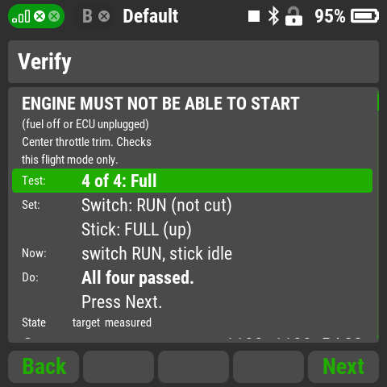
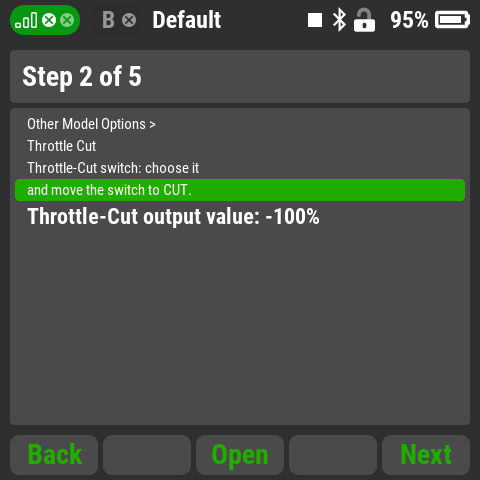

Throttle Setup Wizard
Set up a turbine's throttle on one safety switch, and
prove it works before the engine ever starts. For the
DS-24 II / DC-24 II.

One switch instead of the trim
Many pilots still stop and arm their turbine by clicking the
throttle trim fully down and up. Xicoy's manual warns that digital
trims cause an unstable idle and a delay in shutting the engine off.
One two-position safety switch is simpler and safer:
CUT (Throttle Cut, engine off) or RUN (Throttle Idle,
the engine may run). You only have to set it up correctly once, and
that's what this app is for.
What the app does for you
- Proof, not assumption: measures the real throttle
signal with the switch at CUT and RUN and the stick at idle and
full, and shows pass or fail.
- Tests the dangerous case: switch at CUT with the stick
at full must stay at cut.
- Tells you what to fix: e.g. "Switch RUN gave cut:
reverse the switch assignment", "Full off by +40 us: check Max
positive".
- The right values for your ECU: Max negative/positive
-80/80, Throttle-Idle offset 20%, Throttle-Cut output value -100%
(-125% for Xicoy). Tested with KingTech, Swiwin and Xicoy.
- Opens each menu for you from the guided steps.
- Failsafe isn't forgotten: you confirm a hand test
before the setup is called complete.
- Optional voice callouts: "Turbine off" and "Turbine
on" for the transmitter's Sounds on Event.

Read and instruct only. The app can't change any setting:
you make each change, it tells you exactly what and proves it worked.
Use it on the bench with the engine unable to start (fuel off or ECU
unplugged). Once the setup passes, remove the app from the model and
always re-learn your ECU (Teach RC).
Using it
- Add AG-TrbSt in Applications - User Applications,
then open Throttle Setup Wizard.
- Setup inputs: choose the safety switch and the throttle
stick (assign it as proportional, P), put the switch at CUT and
the stick at idle and press Learn. Choose the throttle
output and your ECU (Xicoy or Other).
- Guided setup: five steps with the exact values and an
Open button for each menu.
- Verify, then the failsafe hand test and the
summary.
Version: 0.1.0
Compatibility: DC/DS-24II, firmware 6.x. Older DC/DS
transmitters should work but are untested.
Voice callouts: Piper text-to-speech with the "Amy" voice by
Mycroft / Rhasspy; the sound files are licensed CC BY-SA 4.0.
Throttle Setup Wizard: MIT license, Copyright (c) 2026 Aaron
George.
Full guide, source and credits:
github.com/Flazzarious/jeti-lua-apps